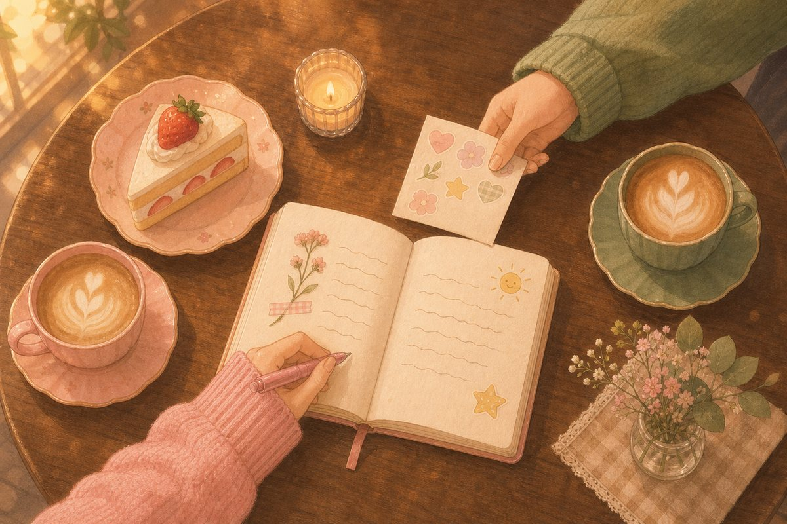

연인끼리 달력·가계부·일기를 같이 쓰면 생기는 일
연애하면서 다툰 이유를 떠올려 보면 생각보다 거창하지 않아요. 잊어버린 약속, 누가 더 냈는지 애매한 밥값, 말하려다 삼킨 서운함. 셋 다 머릿속에만 있어서 생기는 일이에요. 그렇다면 꺼내서 같이 적어 두면 되지 않을까요?
1달력을 같이 보면, 약속을 덜 잊어요
"그날 친구 생일이라고 했잖아." "언제?" 이 대화, 한 번쯤 해 봤죠. 말로 한 약속은 듣는 사람 머릿속에서 금방 흐려져요. 잊은 사람도 미안하고, 기다린 사람은 서운하고요.
둘이 같은 달력에 적어 두면 묻기 전에 보여요. 상대의 바쁜 주를 미리 알면 연락이 뜸해도 덜 불안하고, 비는 저녁을 찾는 일도 메시지 열 개에서 한 번 보기로 줄어요.
2데이트 비용을 적으면, 돈 이야기가 덜 어색해요
돈 이야기는 꺼내는 순간부터 어색해요. 그래서 다들 대충 넘기다가, 어느 날 "나만 내는 것 같아"라는 마음이 불쑥 올라오죠. 사실 계산이 틀린 게 아니라 기억이 다른 거예요. 누구나 내가 낸 건 또렷이, 상대가 낸 건 흐릿하게 기억하기 쉽거든요.
누가 샀는지 그때그때 한 줄씩만 적어 두면 숫자가 대신 말해 줘요. "이번 달은 네가 많이 냈네, 다음 데이트는 내가 살게." 서운함이 쌓이기 전에 이렇게 웃으며 맞출 수 있어요. 반반이 아니어도 괜찮아요. 둘이 정한 방식이 공정함이에요.
공정함은 똑같이 내는 게 아니라,
둘 다 알고 있는 거예요.
3교환일기는 말로 못 한 마음을 건네요
얼굴 보고는 쑥스러운 말이 있어요. "오늘 데려다줘서 고마웠어" 같은 말은 메시지로 보내기엔 가볍고, 직접 하기엔 간지러워요. 교환일기는 그 사이 어딘가에 있어요. 하루를 천천히 적다 보면 그냥 넘겼을 고마움이 문장이 돼요.

그리고 시간이 지나면 이 일기는 둘만의 앨범이 돼요. 1년 전 오늘 우리가 뭘 먹었는지, 그때 무엇 때문에 웃었는지. 사진보다 오래 남는 건 그날의 말투예요.
4그래도 '나만 보기' 칸은 꼭 남겨요
같이 쓰는 게 좋다고 전부 같이 쓸 필요는 없어요. 친구에게 줄 깜짝 선물 값, 혼자 정리하고 싶은 기분, 아직 말하기 이른 고민. 이런 건 내 칸에 두는 게 맞아요.
나만의 공간이 있어야 같이 쓰는 공간이 숨 막히지 않아요. 상대의 칸을 궁금해하기보다 "보여 주고 싶은 것만 보여 준다"는 약속을 먼저 하세요. 그 약속이 오히려 믿음을 단단하게 해요.
오늘 둘이 시작해 볼 것
- 다음 달 약속 세 개만 같은 달력에 적기
- 이번 주 데이트에서 누가 무엇을 샀는지 한 줄씩 남기기
- 오늘 고마웠던 일 하나를 일기 첫 장에 쓰고 건네기
거창하게 시작하지 않아도 돼요. 같은 걸 같이 보는 습관 하나가, 말 안 해도 알아주는 사이를 만들어요.